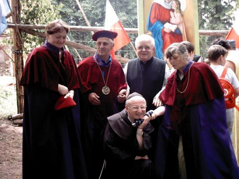
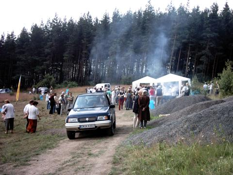

W niedzielę, 25 lipca 2004 roku, na górze św. Anny w Krzeszowie odbył się odpust.
| Mszę odprawiono w pobliży remontowanej kaplicy, w lesie, przy zaimprowizowanym ołatrzu.
kliknij na zdjęcie z lewej strony aby powiększyć do rozmiaru 960x720, 151kB |
|
 |
Trudne warunki polowe nie były powodem do braku odpowiedniej oprawy muzycznej.
kliknij na zdjęcie z lewej strony aby powiększyć do rozmiaru 960x720, 114kB |
| Ksiądz proboszcz Eugeniusz Augustyn udziela Komunii Świętej.
kliknij na zdjęcie z lewej strony aby powiększyć do rozmiaru 960x720, 143kB |
|
| Obraz specjalnie namalowany do odbudowywanej kaplicy.
kliknij na zdjęcie z lewej strony aby powiększyć do rozmiaru 960x720, 157kB |
|
| Autorka obrazu, krzeszowska benedyktynka, siostra Celestyna w towarzystwie swojego brata oraz księdza Tadeusza Ziomka.
kliknij na zdjęcie z lewej strony aby powiększyć do rozmiaru 960x720, 135kB |
|
|  | Brat kszeszowskiego proboszcza.
kliknij na zdjęcie z lewej strony aby powiększyć do rozmiaru 960x720, 106kB |
|  | Już dawno na polanie pod szczytem góry św. Anny nie było takiego ruchu.
kliknij na zdjęcie z lewej strony aby powiększyć do rozmiaru 960x720, 124kB |
| Ten brodaty pan na wozie jest znany chyba każdemu, kto często bywa w Krzeszowie :-)
kliknij na zdjęcie z lewej strony aby powiększyć do rozmiaru 960x720, 141kB |
Autorem wszystkich wyżej widocznych zdjęć na tej stronie jest mój tata, Mieczysław Gabrowski.

{kind=link}
{kind=link}
{kind=link}
{kind=link}
{kind=link}
{kind=link}
{kind=link}